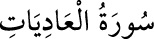

100- el-ÂDİYÂT SÛRESİ
Âdiyât, koşan atlar demektir. Bu sûrenin, Mekke’de mi yoksa Medîne’de mi indiği
husûsunda ihtilâf edilmiştir. Âyetlerinin sayısı ihtilâfsız 11’dir. Bu sûrede
insanoğlunun nankörlüğünden, kıyamet günü ortaya çıkacak acıklı durumdan söz
edilir.